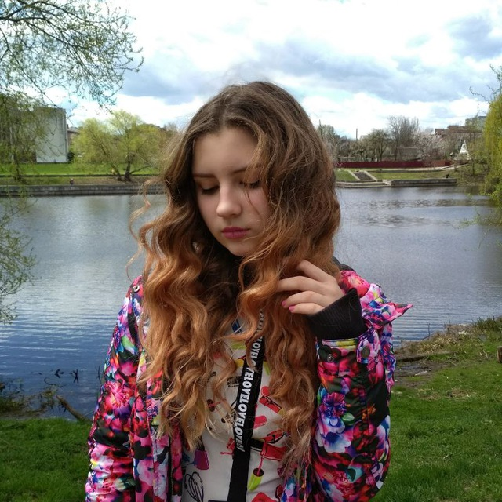
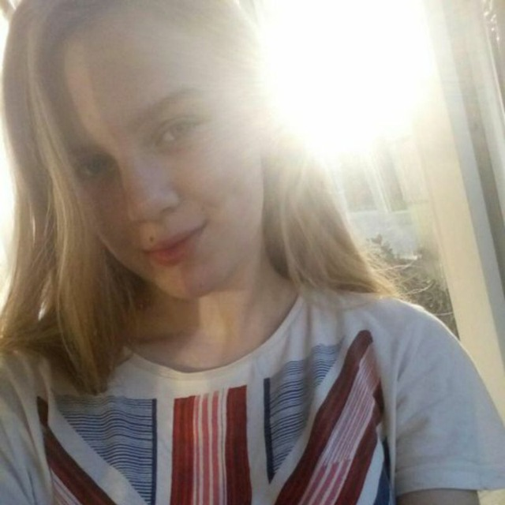
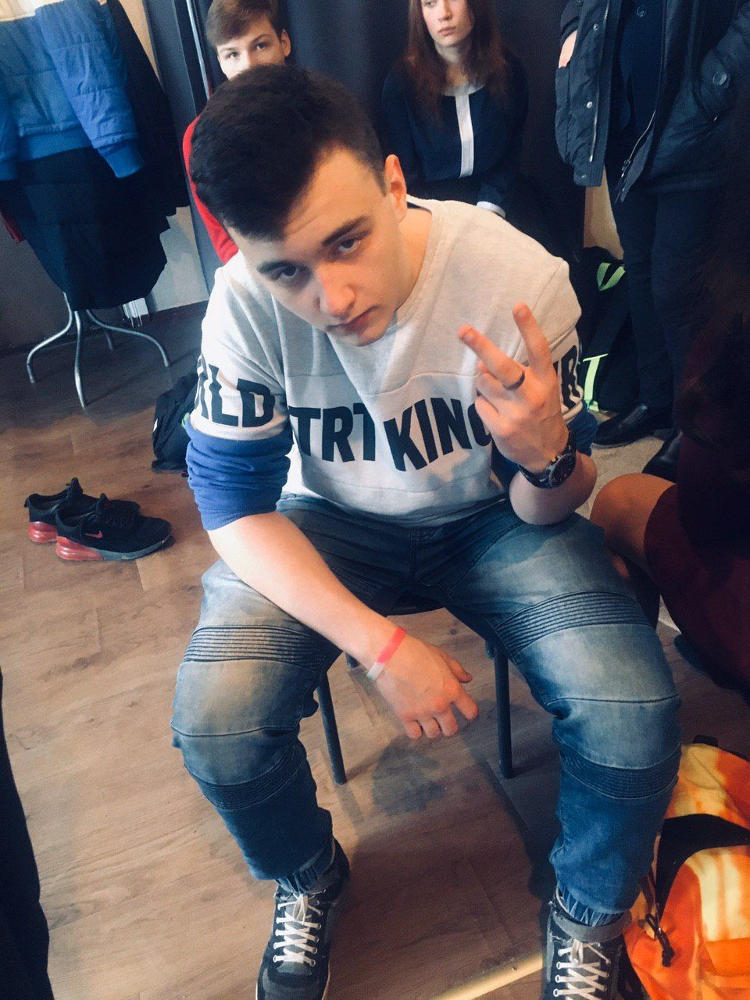

Горох Дарина |
Грязна Анастасія |
Ткаченко Костянтин |
|  |
 |
 |
| Я Горох Дарина, учениця 11-А класу, ліцею √15. Одним з моїх головних захоплень є малювання. Наразі я готуюся до ЗНО з математики, тому я з моїми друзями вирішили створити сайт для допомоги іншим учням. |
Я Грязна Анастасія. З першого класу навчаюся 15 в ліцеї. Я займалася танцями, ходила на радіогурток, пробувала себе у вокалі. Але найбільше я полюбила спорт і математику. Ми з Костянтином і Дариною - кравщі учні класу, тому нам прийшла ідея зробити сайт присвячений математиці. |
Я Ткаченко Костянтин, учень 11-А класу, ліцею №15. Захоплююся баскетболом та ІКТ. Улюблені предмети: фізика та математика. Зараз готуюся до ЗНО. Тому й вирішив, разом з друзями, написати сайт-посібник з деаких тем по математиці. |